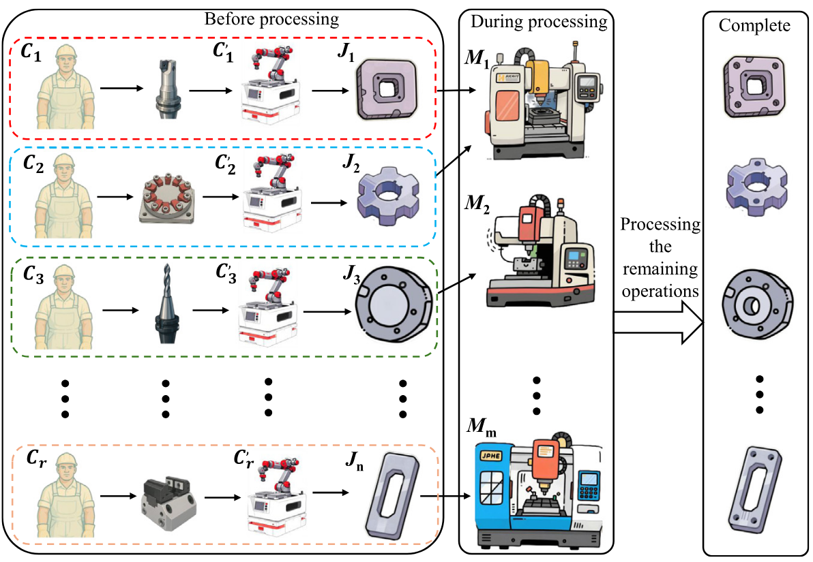
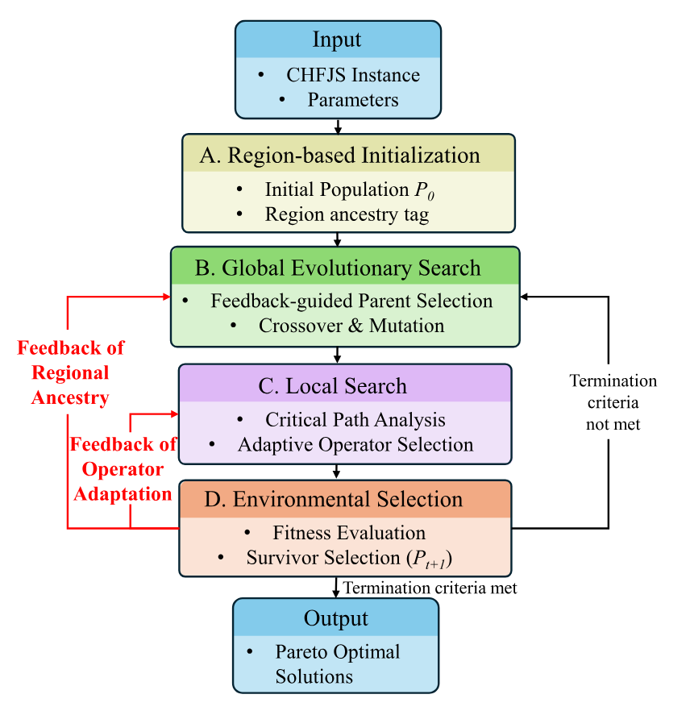
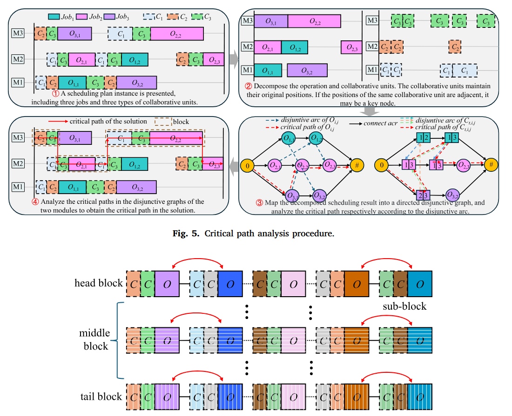

Offline RL for combinatorial decision-making
Learning scheduling policies from logged data without on-policy interaction — conservative value estimation, quantile-based uncertainty, and Actor–Critic training for OOD-robust dispatching.

M.Eng. Student · Beihang University
I'm a second-year M.Eng. student in the School of Automation Science and Electrical Engineering at Beihang University (北航), supervised by Prof. Maolin Cai and Prof. Xiaomeng Tong. Before Beihang, I received my B.Eng. from the Civil Aviation University of China, ranked 1st in my class and college.
I'm broadly interested in learning-based methods for combinatorial optimization. My current work focuses on offline reinforcement learning with heterogeneous graph attention representations for human–machine collaborative flexible job-shop scheduling, and on LLM-assisted algorithm design for intelligent manufacturing.
I use both behavioural and analytical evidence — benchmark experiments, ablations, and cross-scale generalization tests — to advance algorithms that travel from simulation to the shop floor. I'm also drawn to where neural representation, structured priors, and search meet.
When I'm not working, I play basketball and take photographs. I'm applying to PhD programs for Fall 2027.
Learning scheduling policies from logged data without on-policy interaction — conservative value estimation, quantile-based uncertainty, and Actor–Critic training for OOD-robust dispatching.
Treating jobs, machines, and workers as a typed graph; multi-attention extractors that capture process order, resource contention, and skill heterogeneity in a single representation.
Using multiple LLMs cooperatively to evolve modular components of memetic algorithms — encoding, decoding, operators, local search — guided by multimodal prompting and error-feedback repair.
Modeling and optimization of flexible job-shop scheduling with realistic features: worker-dependent setup times, parallel collaborative units, and energy-aware variable-speed machines.



Affiliated with